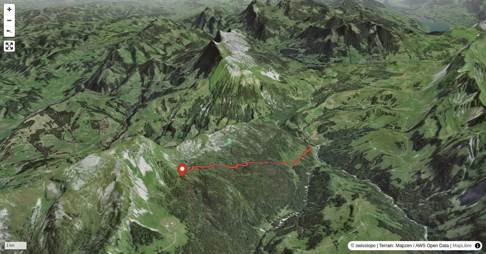

Eine Einkehr zum Start der Tour im Hotel-Restaurant Kemmeribodenbad sollte nicht ausgelassen werden. Es gibt dort die bekannten Riesenmeringues zu geniessen, die anschliessend während gut drei Stunden verdaut werden können!
Bernhard Senn is a physiotherapist specializing in workplace ergonomics and workplace health promotion. Bernhard has been an SAC author since 2013 and will often be found 'out and about' in the mountains; whether with rock gear, skis, mountain bike or paraglider.
Quick Facts
| Summit elevation | 1805 m |
|---|---|
| Difficulty | SAC T2 Mountain hiking on marked trails with uneven terrain and some sustained ascent. Guide |
| Trailhead | Kemmeriboden |
| Distance | 6.6 km (out-and-back) |
| Total ascent | ~828 m |
| Elevation range | 976-1804 m |
| Route sources | SAC Route Portal |
Photos

Route Map & Elevation
i
i
sac_scale (precise T1–T6) with
swissTLM3D Wanderwegart
fallback where OSM is silent (coarser T2/T3 and T4+ buckets).
Coverage: OSM 50.4% · swisstopo 34.7% · unknown 12.3%.Elevations computed from the inlined GPX track (SwissTopo height API).
Loading forecast…
3D Terrain View

Route Details
Vom Kemmeribodenbad
- TODO: Step 1 description.
- TODO: Step 2 description.
Source: SAC Route Portal
Getting There & Back
Start: Kemmeriboden (976 m)
Directions from to Kemmeriboden
Route returns to Kemmeriboden.
Field Reference
| Trailhead | Kemmeriboden | 46.80250, 7.93510 |
|---|---|---|
| Summit | Hohganthuette (1805 m) | 46.78263, 7.90613 |
Coordinates are WGS84 decimal degrees (lat, lon). Emergency: 112 (general) or 1414 (Rega air rescue). Page URL: